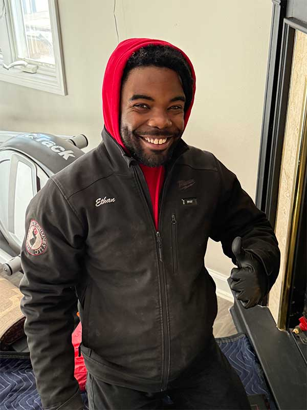
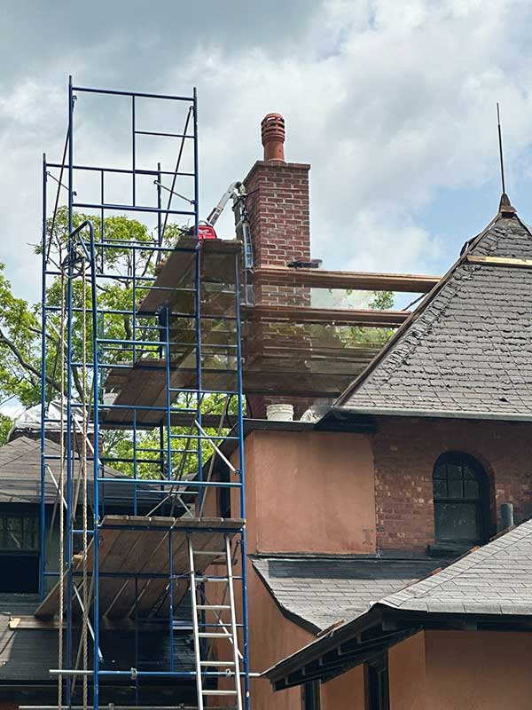

If you’re a homeowner in or around Passaic County and you’re searching for the perfect repair company to fix up your fireplace or chimney, you’ve come to the right place. No matter if your system is suffering from leaks or crumbling brickwork, the team at Garden State can help with every repair service you need in Morristown, Chatham, Madison, North Haledon, and more.
Request an Appointment

Water is the most destructive element a chimney can face. Whether through the top of the flue or seeping into cracks in masonry, moisture eventually wreaks havoc. Other common causes include a damaged or deteriorated chimney liner, extreme temperatures and chimney fires, hidden defects from past installation, and missing components like caps or crowns.
In accordance with the NFPA and CSIA, homeowners should have chimneys inspected at least once a year, before the first use of the season. When you notice strange behaviors or inefficiencies, call your local professionals right away — addressing repairs promptly prevents greater harm and higher costs down the line.
The chimney industry isn’t actually regulated, so do your research. Ask: How long have they been in business? Do they advertise credentials and certifications? Are they friendly and willing to answer your questions? What do their reviews look like, and how do they respond to them? Garden State Chimney checks all of these boxes — and then some.
Call us at 973-519-0802 or book your appointment online. We can’t wait to work with you.